Evaluating neural network models within a formal validation framework
Robin Gutzen, Michael von Papen, Guido Trensch, Pietro Quaglio, Sonja Grün, Michael Denker
Institute of Neuroscience and Medicine (INM-6), Research Center Jülich, Germany
01.09.2019 | INCF Neuroinformatics Conference, Warsaw
What can we learn from models?
-
Models are abstract descriptions of a system of interest,
which able to generate testable predictions. - Insight from models can only be derived via inductive inference.
- Modeling doesn't seek truth, but usefulness.
How can we learn from models?
- The usefulness of a model is only determined by the accuracy of its predictions
- Validation quantifies the prediction accuracy by comparison to observations.
How can we learn from models?
Validation evaluates the consistency of the
predictive simulation outcome with the system of interest,
within the realm of its intended use.

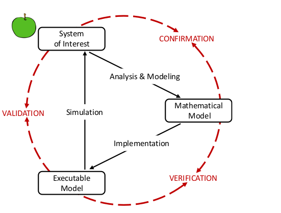
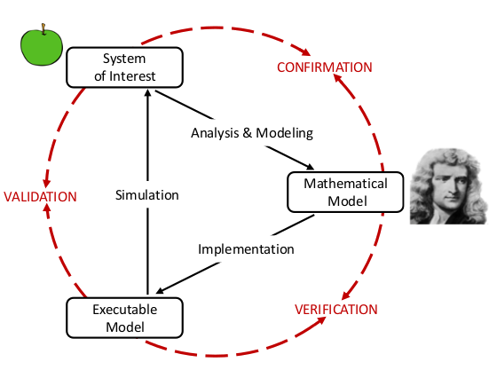
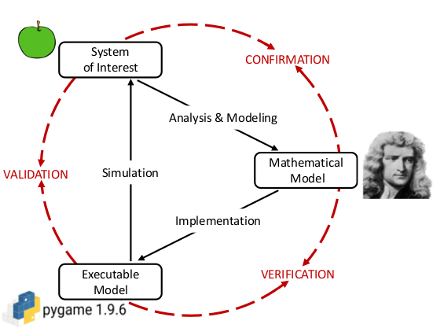
Why is this not a trivial problem?
Did the test, got a score, what now?
- A validation score is a quantitative measure of agreement.
- No single score can reflect the entire range of features and statistics.
- The interpretation of the score depends on the model's intended use.
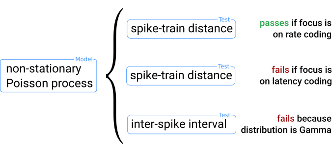
Bottom-up & Top-down
- Validation of small scale elements does not entail agreement on larger scales!
- Validation on large scales does not entail agreement on small scales!
- -> Single-cell and network-level validation are complementary.

'Validation' beyond validation
- Comparing a model to another (already validated) model
- Comparing two versions of the same model
- Comparing two simulators
Example later on 
Developing a network-level validation tool NetworkUnit with SciUnit & Elephant


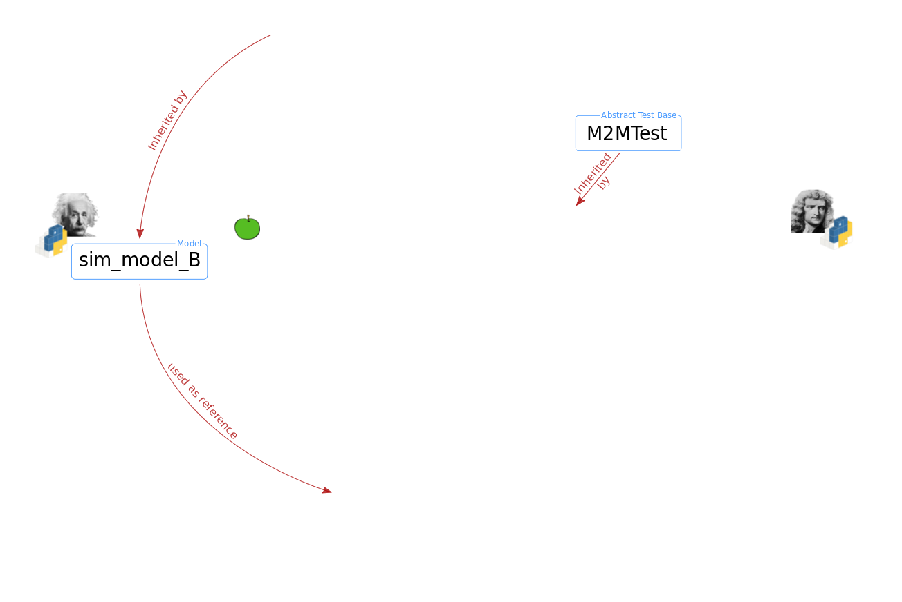
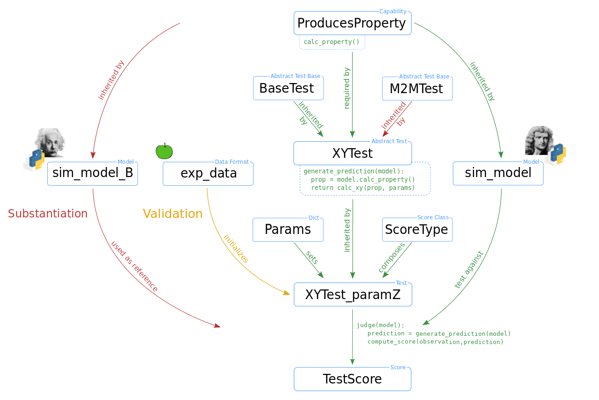
Minimal code example showing the dependency of spike intervals on firing rate
import quantities as pq
from networkunit import models, tests, scores
## Compare correlations of Poisson activity with different rates
# Define models
model_A = models.stochastic_activity('model A', rate=5*pq.Hz)
model_B = models.stochastic_activity('model B', rate=15*pq.Hz)
model_C = models.stochastic_activity('model C', rate=45*pq.Hz)
# Define test
class spikeinterval_test(tests.TestM2M, tests.isi_variation_test):
score_type = scores.ks_distance # <- define score statistic
params = {'variation_measure': 'isi'} # <- define parameter settings
test = spikeinterval_test()
# Run validation test
score = test.judge([model_A, model_B, model_C])
score.score
>>> model A model B model C
>>> model A 0.000000 0.376101 0.669596
>>> model B 0.376101 0.000000 0.385336
>>> model C 0.669596 0.385336 0.000000
Application: validation workflow for simulator comparison
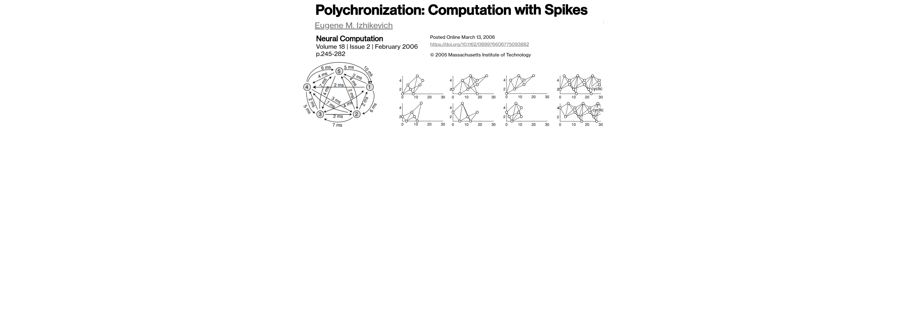
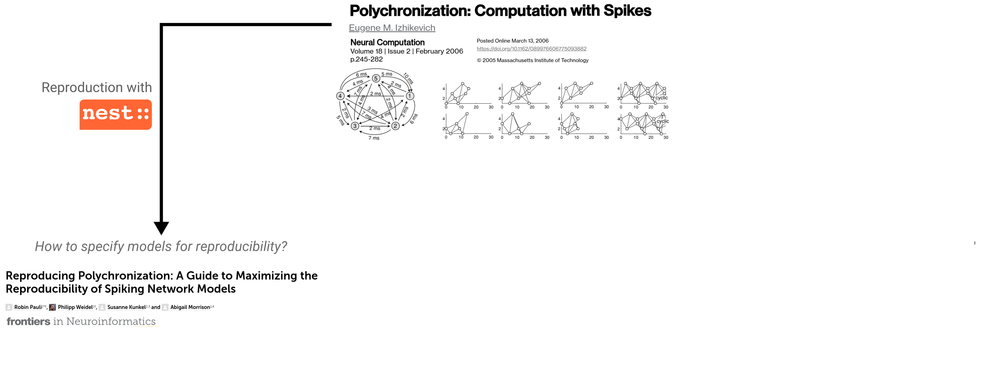
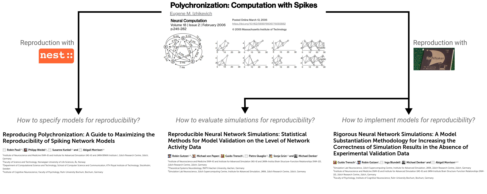
Application: validation workflow for simulator comparison
Validation tests aid the model (implementation) development process.
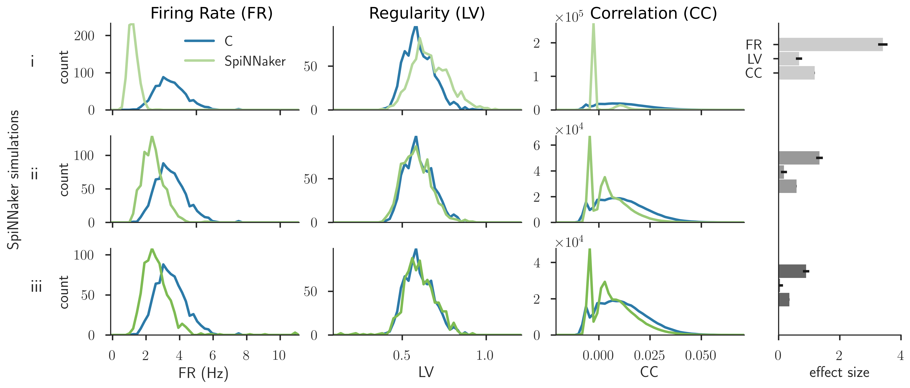Application: validation workflow for simulator comparison
There is generally no hierachy of failure for validation tests.
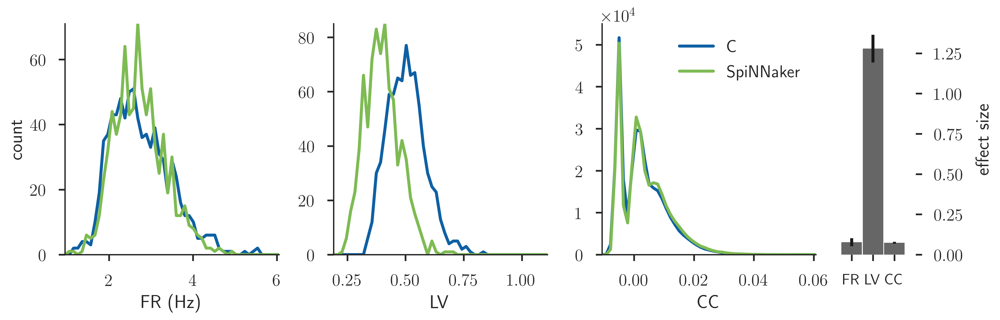Application: validation workflow for simulator comparison
Multiple tests form a quantified level of agreement.
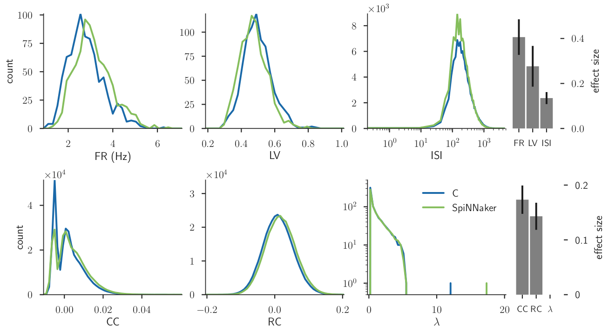Outlook
- Network-level validation tests on the basis of wave dynamics
- There are further specialized neuroscientific validation test packages
(NeuronUnit, HippoUnit, MorphoUnit, etc.)
- Integration of tests and scores with the HBP Valiadtion Framework
Thanks to all collaborators
- Michael von Papen
- Guido Trensch
- Pietro Quaglio
- Sonja Grün
- Michael Denker
- Andrew Davison
- Shailesh Appukuttan
- Lungsi Sharma
- Richard Gherkin
- Sharon Crook
Related posters
- P71 on simulator comparison
- D11 on SciUnit

Further reading
- Gutzen, R. et al. (2018). Reproducible neural network simulations: statistical methods for model validation on the level of network activity data. Front. Neuroinform. 12:90. doi: 10.3389/fninf.2018.00090
- Trensch, G. et al. (2018). Rigorous neural network simulations: a model substantiation methodology for increasing the correctness of simulation results in the absence of experimental validation data. Front. Neuroinform. 12:81. doi: 10.3389/fninf.2018.00081
- Cyrus, O., Aldrich, J., Gerkin, R.C. (2014). Collaborative infrastructure for test-driven scientific model validation. Companion Proceedings of the 36th International Conference on Software Engineering. ACM, 2014. doi: 10.1145/2591062.2591129